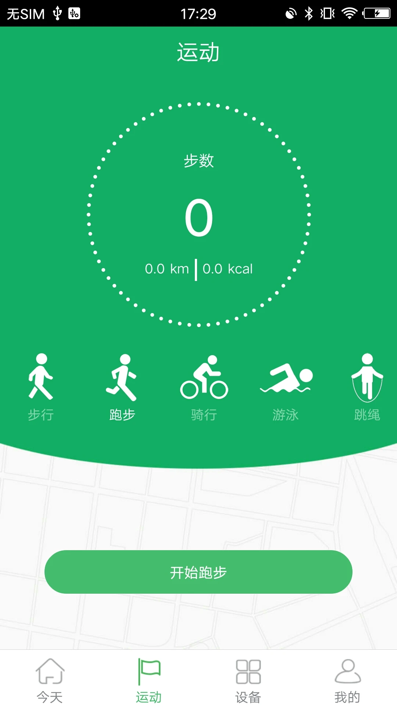

GloryFit 用了两年才发现，这五个隐藏功能官方从没提过
从相机遥控到固件独立更新，从全天压力监测到游客模式，把 GloryFit 翻了个底朝天，挖出五个藏得深但真能用的功能。
你以为 GloryFit官网 就是个连手表、看步数、同步数据的配套 App？从下载装了它、绑了设备、每天扫一眼步数心率——大多数人用到这一步就停了。但我把它翻了个底朝天，设置项来回点了不知道多少遍，发现它藏了好些官方从没在介绍页写过的功能。
不是那种"哦原来还有这个按钮"的鸡肋小彩蛋，是真能在某些场景让你觉得"早知道就好了"的东西。
第一个：手表上直接开相机，不用掏手机
这个功能藏得真深。我有一次在健身房自拍，手机架在角落的推车上，抬手就按了一下手表——手机相机居然自动启动了。后来才反应过来，这不是什么巧合，是 GloryFit 配套手表自带的相机遥控。
入口在两个地方都能找到：App 里是「设备 → 相机」或者「设备 → 更多设置 → 相机遥控」，点一下「启动相机」就行。但我后来发现，直接在手表应用列表里找那个圆形的快门图标更顺手，按一下手表通过蓝牙就能唤醒手机相机。
拍的时候手表上点一下就是快门，部分型号长按还能连拍。少数中高端型号甚至能在手表屏幕上看到手机相机的实时画面预览——但大多数 GloryFit 配套型号只能"盲拍"，看不到画面，得提前调整好手机角度。这是我踩过的坑：第一次用的时候以为能预览，按了一下发现不知道拍的是什么位置。
谁用得上：喜欢自拍、跑马拉松想拍终点、骑行时想抓拍路边风景的人。手机放在稳定位置，抬手按表就行，不用冲过去点屏幕。
谁可以无视：平时拍照全靠前置摄像头、或者手表是入门款手环的——入门型号大概率没有这个功能。

第二个：全天自动压力监测，不用手动点
压力监测这个功能很多人可能在 App 首页见过，但默认是手动测量——进手表菜单找压力图标、点一下、等一到两分钟出结果。我也是手动测了大半年，才偶然发现部分型号其实支持全天自动监测。
HRV（心率变异性）这个原理我就不展开了，简单说就是心率波动越小、自主神经越紧绷，压力值就越高。手动测是瞬时值，自动监测是持续追踪一天的波动曲线——哪个时间段压力陡升、哪个时候明显放松了，看曲线一目了然。
开启的入口在手表里找压力/HRV 的设置项，或者 App 健康监测区的压力卡片旁边有没有「全天监测」的开关。不是所有型号都有这个选项，入门款可能只支持手动。
谁用得上：加班多、情绪波动大、想量化自己紧张程度的人。压力值飙高的时候配合手表的呼吸训练功能一起用，体感上确实能快一点稳下来。
谁可以无视：本来就不在意压力数据、或者手表不支持的。
第三个：实时体温，不是点一下测完就没了
体温监测刚出来的时候我以为就是个手动的温度计——找入口、点开始、等十秒、看一眼数值、关掉。后来冬天那次感冒，我夜里戴着表，早上醒来发现手表屏幕上一直飘着一个体温数字。
原来部分 GloryFit 配套型号支持实时体温，不需要每次手动点测，持续显示当前的体表温度。原理也简单：手表底侧的温度传感器一直贴着手腕皮肤，持续读值。
体表温度比腋下体温低 0.3 到 0.5℃ 是正常的，刚运动完、洗完澡、从空调房进进出出之后立即测不准。所以我现在把它当一个辅助参考——夜里看一眼实时体温有没有往 37.5℃ 以上走，比半夜爬起来摸额头靠谱。

第四个：手表固件独立更新，别只更 App
这个是我踩过最大的坑。有段时间蓝牙连接一直不稳定，断开重连断开重连，App 更到最新版也没用。翻设置的时候才发现，手表固件和 App 是两套独立的版本——我 App 更到了 3.7.2，但手表固件还停在半年前的旧版。
更新入口藏得有点深：App → 设备 → 往下拉找到「固件升级」。手表固件更新比 App 慢得多，可能半年到一年才更一次，但更新完蓝牙连接、通知推送这些高频问题大概率能缓解。
而且版本号还有个小细节，我后来翻GloryFit文档才弄明白：App 版本号后面带的那串数字（比如 3.7.22345）是内部 build 编号，表示具体编译版本。如果 App 和固件版本不匹配，会出现功能异常——比如某些设置按钮点不动、部分数据不同步。两个都更完之后重新配对一次（先取消配对再重新绑定），比单纯重启蓝牙管用得多。
第五个：游客模式，数据只留本地
最后这个是隐私选项。GloryFit 默认引导注册账号，但其实你可以直接跳过——不登录、不注册，用游客模式。所有健康数据、运动记录、睡眠分析都只存在手机本地，不上传云端。
适合两种情况：一是极度在意隐私，不想让健康数据飘到任何服务器上；二是只用手表做基础监测，没有跨设备同步的需求。代价就是换手机的时候数据带不走，卸载 App 本地数据就没了。
如果你之后想同步，注册账号也行，数据会在注册后开始上传云端。想注销也随时能在 App 设置里找到，云端数据会被清掉。
最后说一个坑别踩
GloryFit 的 Android 和 iOS 版本不同步得挺夸张——Android 已经到 3.7.2 了，iOS 还停在 1.6.x。新功能一般在 Android 先上，Google Play 审核比 App Store 快。所以如果你看到朋友的 Android 上有某个功能、自己 iPhone 上找不到，大概率是 iOS 版本还没跟上，不是你不会找。
这五个功能不是什么惊天动地的新特性，但藏得都挺深——官方介绍页没写、设置入口埋得远、很多人用了一年都不知道。为了找这些入口我翻了好一阵，相关的功能记录分别放在了GitHub、Gitee和GitCode，有需要可以去翻。把 GloryFit 用透，不在于每天盯步数走了多少，而是让那些藏着的功能真正服务到自己的日常。